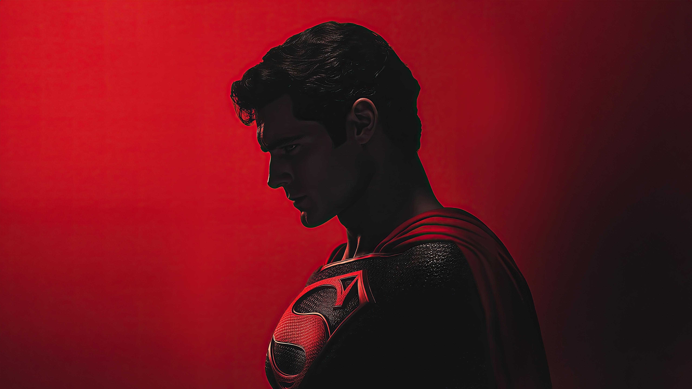

The Dawn of Superheroes
The DC Universe was born in 1934 with the founding of National Allied Publications, later becoming DC Comics. It introduced the world’s first superhero, Superman, in 1938—a symbol of hope, strength, and justice.

Iconic Heroes & Villains
DC is home to some of the most legendary characters in comic book history. The Dark Knight (Batman), the Amazon warrior Wonder Woman, the fastest man alive The Flash, and the fearless Green Lantern are just a few of the icons who define heroism.
But heroes are only as strong as their villains. From the chaotic genius of The Joker to the god-like terror of Darkseid, DC’s villains are as complex as they are dangerous.
"In brightest day, in blackest night, no evil shall escape my sight." — Green Lantern
The DC Extended Universe (DCEU)
With films like Man of Steel, Wonder Woman, and Justice League, DC expanded its universe beyond comics. The DCEU explores the darker, mythological aspects of superheroes, with stories that dive deep into themes of identity, justice, and sacrifice.
Legacy Beyond Comics
From animated masterpieces like Batman: The Animated Series to blockbuster films and graphic novels like Watchmen and The Dark Knight Returns, DC has shaped pop culture across generations.
← Back to Home